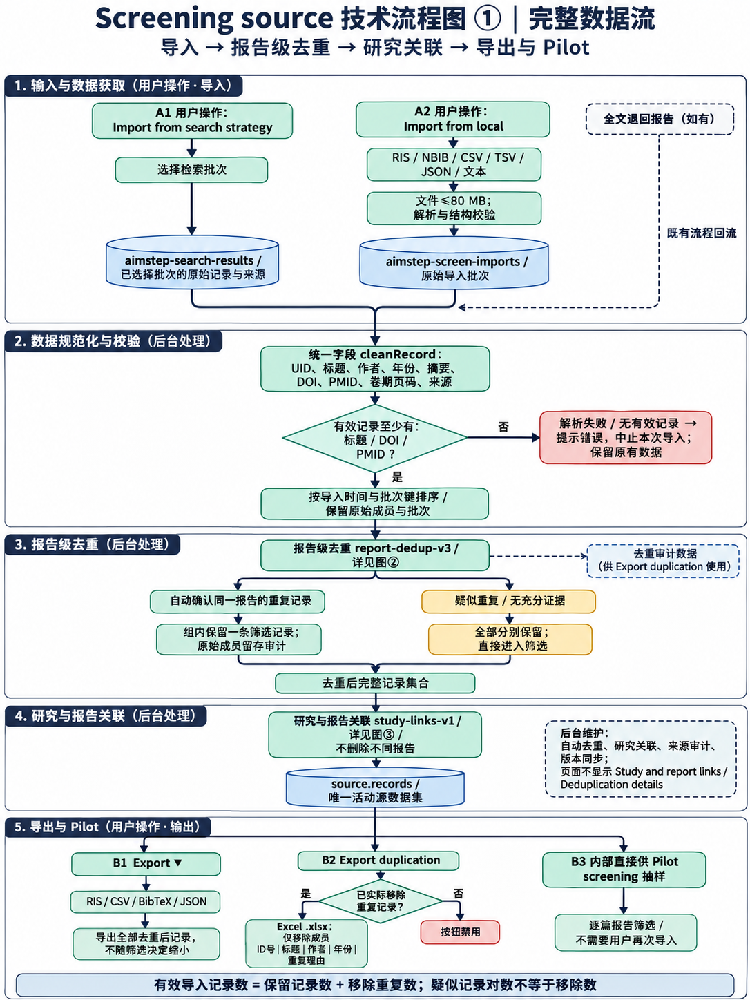
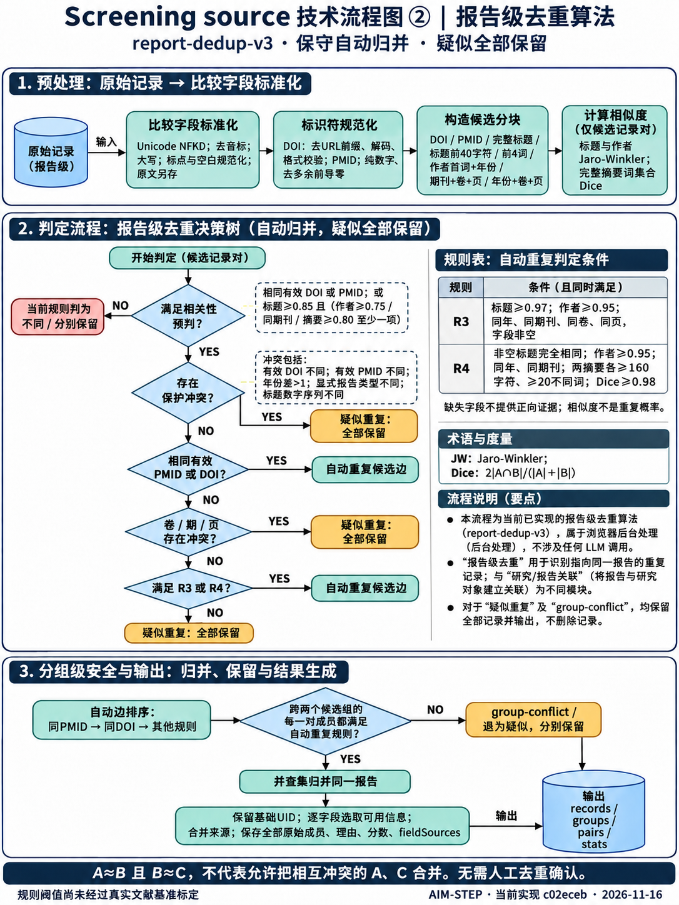
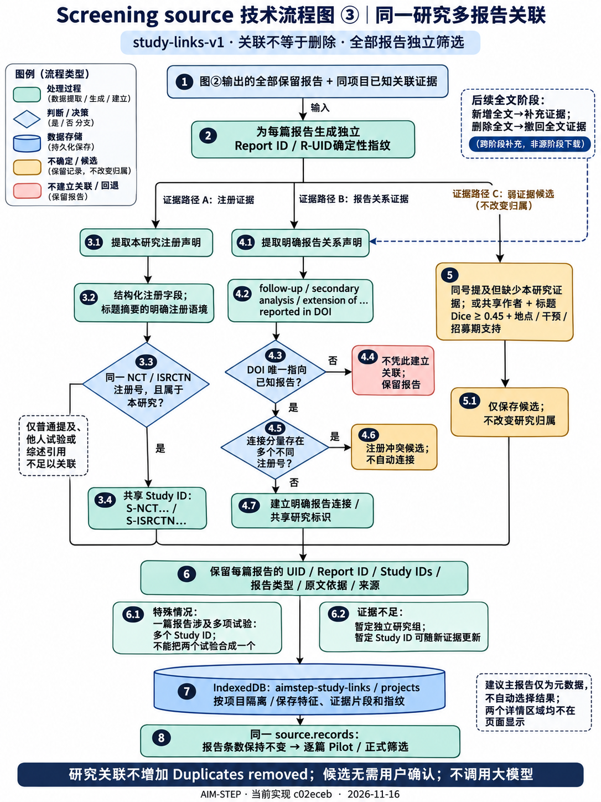
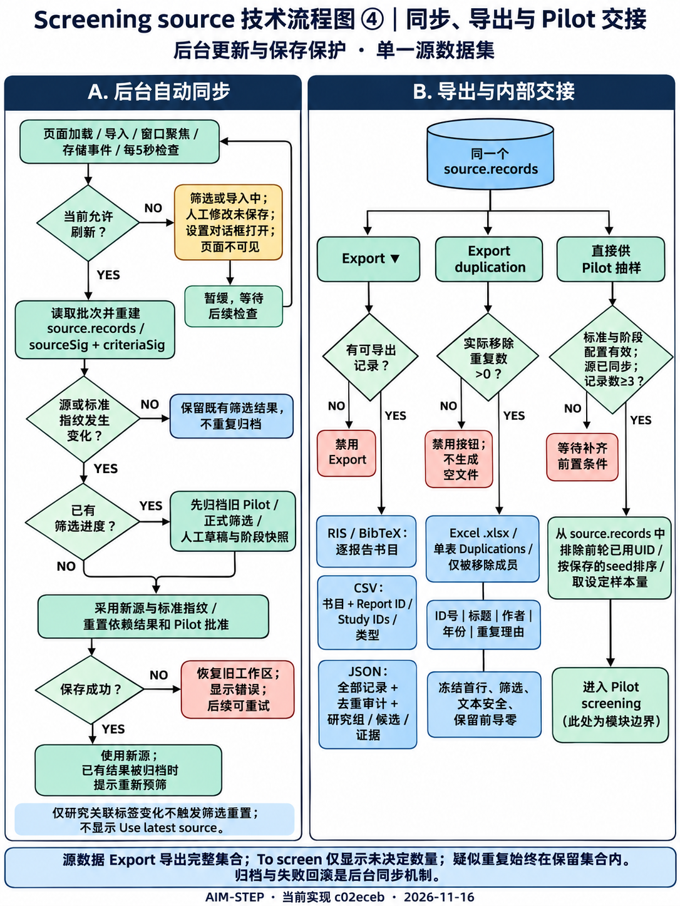

Screening source 技术流程图
四张图按①至④阅读。点击图片或“打开原图”查看完整 PNG；手机可双指放大，电脑可在原图页面点击图片放大。
下载全部图片与可编辑源码（ZIP）继续查看 Pilot screening 与 Main screening 的六张技术流程图
① 完整数据流
导入、清洗、报告级去重、研究关联、导出与 Pilot 入口。


② 报告级去重算法
候选分块、相似度、冲突保护、R1–R4 条件、跨组检查及字段来源。


③ 同一研究多报告关联
注册号、明确 DOI 报告关系、弱证据候选、Study ID 与 Report ID。


④ 同步、导出与 Pilot 交接
后台刷新、旧结果归档、失败回滚、导出条件与 Pilot 抽样。


图中“后台”指浏览器端自动处理。疑似重复全部保留，同一研究的不同报告分别筛选。阈值对应当前工程规则，尚未经过独立真实文献基准标定。